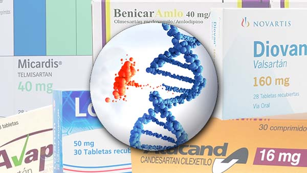
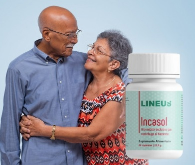
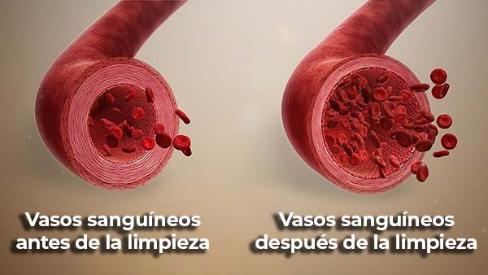

Dr Oswaldo Restrepo: “¿La presión arterial de 120/80 es un sueño imposible para ustedes? Conozco una forma de deshacerme del dolor de cabeza ¡SIN medicación”
El Dr. Oswaldo Restrepo es un cardiólogo y profesor chileno. Es conocido por tratar a personas sin pastillas. Entre sus pacientes hay famosos de Chile, Brasil, México e incluso Estados Unidos. Rara vez concede entrevistas, porque dedica su tiempo a tratar a los pacientes. Oswaldo está convencido de que es posible vivir 100 años sin pastillas. Nos habla de los MÉTODOS PARA TRATAR LA HIPERTENSIÓN EN ANCIANOS SIN PASTILLAS.
Lee hasta el final si quieres saberlo:
- ¿Cuál es el medicamento más común para la hipertensión que envenena a la población desde hace más de 20 años?
- Por qué la hipertensión y las enfermedades del corazón (derrame cerebral, infarto de miocardio, aterosclerosis) tienen la misma causa
- Cómo normalizar la presión arterial en 1 día y deshacerse de los dolores de cabeza SIN PREPARATIVOS
- Doctor, usted ha afirmado en repetidas ocasiones que el tratamiento estándar para la hipertensión sólo empeora el curso de la enfermedad.
- Sí, es cierto. El 98% de los medicamentos para la hipertensión sólo alivian temporalmente los síntomas. Pero sin medicación, la enfermedad reaparece y afecta al organismo con renovado vigor. La persona se convierte en drogadicta y ya no puede existir sin medicación.
Por ejemplo, LOZARTAN. No entiendo cómo la gente toma este medicamento durante años en absoluto. Mareos constantes, fatiga, problemas renales y hepáticos. ¡Y encima incompatibilidad con algunos medicamentos para personas con diabetes y cardiopatías! Como médico, me alegro de que nuestro país empiece por fin a recetar un medicamento que elimine los peligrosos efectos del losartán. Cada vez más médicos abandonan el fármaco sintético en favor de un ANÁLOGO NATURAL.
- ¿No había antes medicamentos seguros con un efecto similar?
- Ha habido análogos del Lozartán, pero los efectos de tomarlos dejan mucho que desear. Los nombres son diferentes, pero el envase esconde la misma sustancia. Por ejemplo, Diovan, Avapro, Atacand, Micardis, Benicar. Se trata de una estratagema de marketing. Parecen medicamentos diferentes, pero en realidad son el mismo.
Entre los efectos más comunes, aparte de los daños en el ADN: insuficiencia hepática, enfermedad hepática, estenosis bilateral de la arteria renal. Los médicos intentan tratar el corazón y los vasos sanguíneos, causando daños irreparables a otros órganos.

Amigos, no hay por qué jugar al escondite con la hipertensión. Es una enfermedad insidiosa y silenciosa. Cuando aparece esta enfermedad, se presentan los siguientes cambios:
- fatiga crónica;
- empeoramiento de la inteligencia y la memoria;
- migrañas;
- empeoramiento de la visión, lo que conduce a la ceguera en casos graves;
- empeoramiento de la audición;
- mala coordinación del movimiento;
- cambios al andar;
- debilidad de brazos o piernas;
- reducción general de la sensibilidad;
- dolor articular y muscular;
- insomnio;
- disfunción eréctil.
Todos estos síntomas empeoran significativamente la calidad de vida. Para los hombres se vuelve difícil jugar con sus hijos/nietos y realizar las actividades diarias, mientras que para las mujeres es más difícil mantener la vida doméstica, lo que se debe a la falta de aire constante incluso durante actividades físicas insignificantes.
No tratar la hipertensión puede matarte!
- Doctor, ha dicho que la hipertensión no tratada es la enfermedad más peligrosa.
- Sí, lo es. La hipertensión causa infarto de miocardio, insuficiencia renal, ceguera, arritmia, insuficiencia cardíaca en pocos años SIN TRATAMIENTO. El suministro de sangre al corazón, riñones, cerebro, TODOS los órganos vitales se resiente. El cuerpo se asfixia. El corazón no puede suministrar suficiente sangre a los órganos y tejidos, y el cuerpo carece de oxígeno y nutrientes.
Estas son las estadísticas actuales para 2022. ¡La hipertensión mata a millones de personas al año!
- Hipertensión
- Enfermedades oncológicas
- Diabetes
- ¿No reacciona el Estado de alguna manera ante esto? ¿Sigue fomentando la venta de losartán?
- Esto es de lo que quería hablar. Estoy increíblemente orgulloso y feliz de que Chile haya sido uno de los primeros países de Sudamérica en realizar un estudio independiente sobre Incasol. 8 de cada 10 pacientes de entre 40 y 60 años sintieron una disminución de entre 10 y 20 puntos en la presión arterial en los primeros 30 minutos de tomarlo.
También se ha observado que Incasol elimina los mareos, la debilidad y otros efectos negativos del losartán.
¿Ha oído hablar de Incasol?
- Sí, sí, ¿se trata del mismo medicamento que ha recibido apoyo financiero del Ministerio de Sanidad?
- Sí, exactamente. Déjeme explicarle cómo funciona este producto.
Incasoles una píldora a base de plantas para estabilizar la tensión arterial. Es una protección 3D para el corazón y los vasos sanguíneos contra el envejecimiento prematuro. ¿Qué significa? El año pasado, los científicos descubrieron que el efecto más agresivo y destructivo sobre los vasos sanguíneos lo causa la hormona homocisteína. No sólo daña la superficie, sino que favorece el asentamiento de los vasos sanguíneos. Esta sustancia es muy peligrosa. Los niveles elevados de homocisteína aumentan el riesgo de enfermedades cardiovasculares, derrames cerebrales, enfermedad de Alzheimer y osteoporosis. Incasol neutraliza la homocisteína en el plasma sanguíneo. El fármaco simplemente convierte esta hormona en otro aminoácido: la metionina. La metionina no es peligrosa para el ser humano.
Y eso no es todo. Los ácidos omega-3 presentes en su composición refuerzan las paredes vasculares, reducen la viscosidad de la sangre y disminuyen el nivel del dañino colesterol de baja densidad. Ya sabes lo peligroso que es el colesterol. Obstruye los vasos sanguíneos e impide que la sangre circule correctamente. Afecta a todos sus órganos. Repito. TODOS LOS ÓRGANOS SE VEN AFECTADOS.
Por último, Incasol tiene un potente efecto antioxidante, evitando la oxidación del colesterol dañino y la formación de radicales libres.
La eficacia de Incasol radica en su composición: Remolacha, Magnesio, Ajo, Vitamina B3
- Esto es increíble. ¿La medicina realmente funciona así?
Incasol es un producto desarrollado por expertos líderes en el campo de la cardiología. Durante más de tres años, desarrollaron una fórmula que proporciona los mejores resultados en el tratamiento de la hipertensión y sus consecuencias.
En Chile, el estudio Incasol fue realizado por el Instituto Nacional del Tórax (Santiago) y el Instituto del Corazón de las Américas (Santiago). Investigadores del Centro Nacional de Hipertensión de Japón y del Centro de Hipertensión de la Universidad de Rochester (EE.UU.) también han demostrado la eficacia del producto.
Yo también tomé Lozartan en su día. Y sufrí mucho con este medicamento. Ahora tomo Incasol cada 6 meses hago un curso para mantenerme bien.
El tratamiento con Incasol consiste en tomar el medicamento sin interrupción durante 6 semanas. La interrupción del tratamiento ralentizará el proceso de recuperación.
Incasol reduce la tensión arterial (tensión arterial < 130/85) en unos minutos en casa
Voy a explicar detalladamente para todos mis seguidores y pacientes cómo funciona Incasol.
1. El dolor de cabeza desaparece INMEDIATAMENTE. El dolor de cabeza, las náuseas y los mareos desaparecerán. EN 2 MINUTOS su presión arterial bajará.
2. Ya después del primer tratamiento, su presión arterial no sube por encima de 130/85. Su presión arterial no fluctuará en el transcurso del día.
3. Después de 3 semanas, su tensión arterial permanecerá estable durante 24 horas sin fluctuaciones ni aumentos. Tendrás más energía, confianza en ti mismo, un gran estado de ánimo y los pensamientos depresivos dejarán de molestarte.
Puedes sufrir dolores de cabeza e hipertensión durante años.
¡O puedes resolver el problema de una vez por todas!
Incasol superó el año pasado la fase final de las pruebas de los Institutos Nacionales de la Salud (NIH) de Estados Unidos. Este ensayo clínico a gran escala se denomina "Eficacia de Incasol frente al losartán para el tratamiento de la hipertensión arterial de leve a moderada". Los resultados muestran que Incasol es 4 veces más eficaz que el losartán, no causa daños en la estructura química del ADN mitocondrial y no provoca insuficiencia renal. ¡Se trata de un importante descubrimiento médico en 2022!
Incasol ha recibido todos los certificados de calidad y seguridad necesarios:
- ANSPIS - Certificación No.68243237012/1
- ANSPIS - Certificación No.68243237012/2
- INVIMA - Resolución No.2020037687
- FitoBiocell S.A.S - Ficha technica No.528096441

- ¿Cuánto cuesta Incasol y dónde se puede comprar?
Lamentablemente, Incasol no puede adquirirse en farmacias. El medicamento requiere unas condiciones especiales de almacenamiento: una temperatura y una humedad determinadas. Las farmacias locales no pueden garantizar las condiciones de almacenamiento, por lo que el fabricante sólo vende Incasol a través de su página web oficial. ¡Esto es una GARANTÍA DE CALIDAD!
El precio del producto es ahora muy asequible. Se puede pedir por tan solo el 50% de su precio, ya que Incasol ha entrado en el programa de subvenciones estatales.
Para obtener más información sobre cómo recibir Incasol en cualquier parte del país:
- Completen el formulario en el sitio web.
- Después de eso, un manager les llamará y les pedirá su dirección de entrega.
Respóndete a algunas preguntas: ¿Quiero librarme hoy mismo de mi dolor de cabeza? ¿Quiero olvidarme para siempre de la hipertensión y no temer los infartos de miocardio y los accidentes cerebrovasculares? ¿Quiero volver a tener una vida sana y feliz?
SIN PRODUCTOS QUÍMICOS NI COMPONENTES SINTÉTICOS


nº 29894 de 30.000


Obtención de información y elaboración de una orden de pedido oficial
No recomiendo pedir este producto en otros sitios web para evitar estafadores